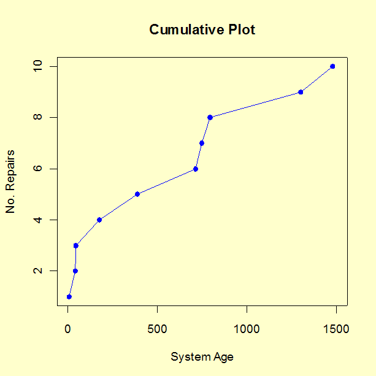
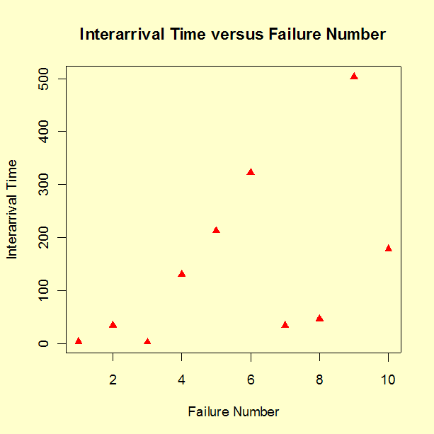
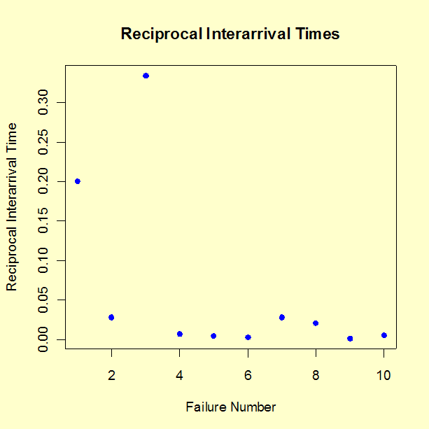

|
8.
Assessing Product Reliability
8.2. Assumptions/Prerequisites 8.2.2. How do you plot reliability data?
|
|||||||||||||||||||||||
| Repair rates are typically either nearly constant over time or else consistently follow a good or a bad trend |
Models for repairable
systems were described earlier. These models are for the cumulative
number of failuress (or the repair rate)
over time. The two models used with most success throughout industry are
the HPP (constant repair rate or "exponential"
system model) and the NHPP Power Law process
(the repair rate is the polynomial \(m(t) = \alpha t^{-\beta}\)).
Before constructing a Duane Plot, there are a few simple trend plots that often convey strong evidence of the presence or absence of a trend in the repair rate over time. If there is no trend, an HPP model is reasonable. If there is an apparent improvement or degradation trend, a Duane Plot will provide a visual check for whether the NHPP Power law model is consistent with the data. |
||||||||||||||||||||||
| A few simple plots can help us decide whether trends are present |
These simple visual graphical tests for trends are
|
||||||||||||||||||||||
| Trend plots and a Duane Plot for actual Reliability Improvement Test data |
Case
Study 1: Use of Trend Plots and Duane Plots with Reliability
Improvement Test Data
A prototype of a new, complex piece of equipment went through a 1500 operational hours Reliability Improvement Test. During the test there were 10 failures. As part of the improvement process, a cross functional Failure Review Board made sure every failure was analyzed down to the root cause and design and parts selection fixes were implemented on the prototype. The observed failure times were: 5, 40, 43, 175, 389, 712, 747, 795, 1299 and 1478 hours, with the test ending at 1500 hours. The reliability engineer on the Failure Review Board first made trend plots as described above, then made a Duane plot. These plots follow.   
Comments: The three trend plots all show an improvement trend. The reason it might be useful to try all three trend plots is that a trend might show up more clearly on one plot than the others. Formal statistical tests on the significance of this visual evidence of a trend will be shown in the section on Trend Tests. The points on the Duane Plot line up roughly as a straight line, indicating the NHPP Power Law model is consistent with the data. Estimates for the reliability growth slope and the MTBF at the end of this test for this case study will be given in a later section. |
||||||||||||||||||||||